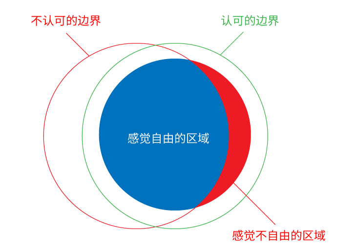

自由的感觉（幻觉）来自于认同边界
在讨论“自由”相关的话题时，总有人有意无意地将“自由”等同于“为所欲为”，但我们在生活中体验愉悦舒畅的自由感觉时，往往不是毫无节制地肆意妄为。
我们曾在柔软的青草地上奔跑，清爽的风拂面而来；曾经泛舟湖面，举目眺望天水一色；这不需要我们具备上天入地、无所不往的能力；
曾经与三五好友在熟悉亲切的小客厅畅谈，无所顾忌；曾经豪情壮志展望未来，憧憬和规划美好的明天；这也不需要非得说出任何没有禁忌的话语、干出任何没有下限的事情，才叫做自由。
明明进行的是非常有限而节制的活动，我们充分感受到了自由的美好，因为我们一开始就知道边界在哪里，并且认同仅在此边界范围内活动，不需要额外担心违背什么规则，触犯什么禁忌，做出出格的事得罪他人，只要我们自己评估过是安全的行为，就不用害怕受到惩罚。
普通人需要的自由，就不是意欲限制自由者庸俗认知中的“想干什么就干什么”，是边界经过自己认同的自由，是符合正常人的正常情感和理性，为社会大众一致认同的规则。
或许在一些小细节上大家意见不一致，但不至于匪夷所思，不至于在大多数领域说话、做事要心怀恐惧，要时刻担心逾越红线。
孔子说“从心所欲不逾矩”，也是类似。
明辨是非，谨守规矩，方能达到从心所欲的境界。

就像图中所示，在没有红色的不认可边界时，活动是自由的，因为整个圆形都在活动者自己认可的蓝色边界之内。
但出现红色的边界，并且不为活动者自己认可时，被划在边界之外的部分就变成红色，也就是有了不自由的感觉。
在网络上发言，就像在日常生活中和平等以待的陌生人说话一样，你知道有的话说出来会伤人，会招来愤怒的还击，所以你会主动收敛不去犯贱，但其他的话，你也知道尽可以畅所欲言，因为你相信，你也相信大家都相信，说实话分享所见所闻所想、实事求是地发声批评不应该是一种罪，不应该被谁冷不丁的冲出来捂住嘴巴。
你也知道什么是色情，什么是偷盗，什么是诈骗，什么是暴力攻击，等等犯罪行为。
你知道你不会触犯这些禁区，你也相信大多数人都知道禁区在哪里；
你有自信判断自己的行为有没有违法，你相信即使被误会，也有公正公开透明的渠道自证清白，不用担心忽然有人敲门查水表请喝茶，也不会因为莫须有的罪名悄悄消失。
你相信其他地方的人们能够心安理得行使的基本权利，你也可以行使；
他们能得到保障的权益，你也不用担心被随意掠夺；
他们凭借聪明才智和付出辛勤劳动收获的成果不会一瞬间化为乌有，你也一样。
这些，才是稳定秩序的基础。
那些偷换了“自由”概念的人，将“自由”与“稳定秩序”对立起来，通过反对一个扩大无数范围的概念稻草人，来限制普通人正常、合理的自由需求。
而体会过真正自由的人，不应该被这种花招迷惑住。